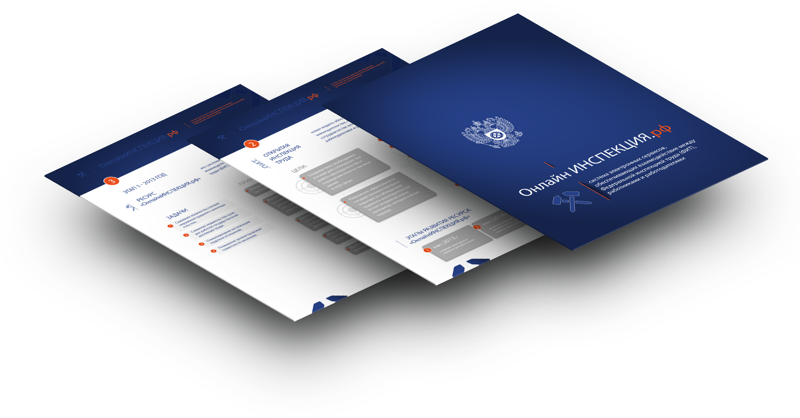
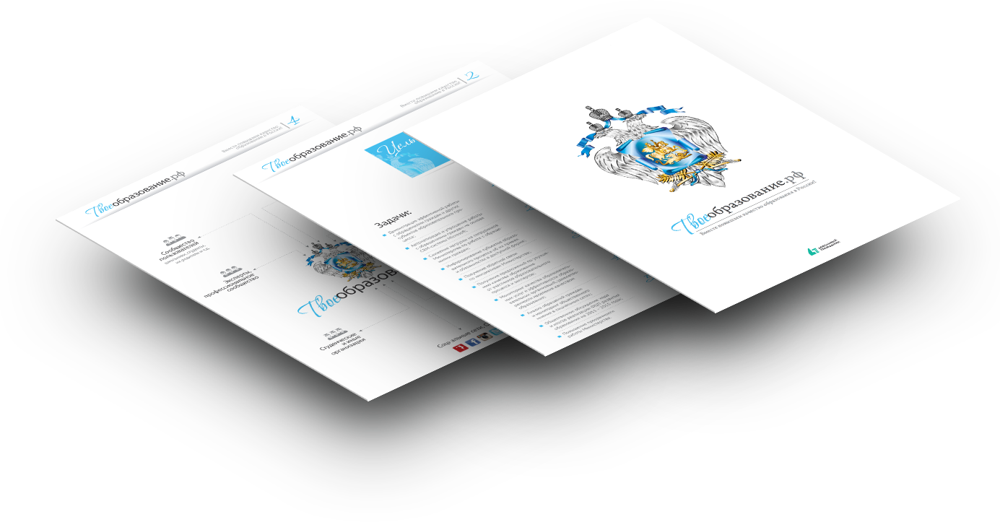

Ведем проекты, которые помогают людям жить лучше
Сердитый гражданин
- Независимый онлайн-сервис и мобильное приложение по приему жалоб жителей России и их автоматическому распределению по ответственным инстанциям для поиска решения
- Открытая база данных по проблемам, которые беспокоят граждан в различных федеральных округах
- «Точка входа» для решения проблем пользователей и инструмент для эффективной, оперативной и прозрачной обратной связи с ними органов власти, корпораций и экспертов
- Финалист «Премии Рунета» 2012 г.
Довольный гражданин
Информационная система для:
- органов власти и граждан
- коммерческих компаний и клиентов
- некоммерческих организаций и активистов
- вузов и студентов
С помощью системы организации оптимизируют процессы приема обращений и жалоб, вопросов и инициатив от граждан. Смогут публично освещать результаты взаимодействия, а также предупреждать развитие конфликтных ситуаций.
Подробнее
Проекты на платформе довольный гражданин

Довольный
гражданин
гражданин
Проект для Федеральной службы по труду и занятости для соблюдения трудового права в России
- Снизить количество нарушений трудового законодательства
- Повысить уровень правовой грамотности населения
- Увеличить эффективность взаимодействия между гражданами и органами власти
- Онлайнинспекция.рф стал главным инструментом бращения граждан в Роструд по всей России
- За 5 месяцев работы проекта получено более 5,5 тысяч обращений граждан, более 2 тысяч ответов дано предстаителями ведомства

Довольный
гражданин
гражданин
ДорогиПодмосковья.рф
- Сервис
Довольный гражданин: Дороги Подмосковья
запущенный в августе 2013 года при поддержке Главного управления дорожного хозяйства Московской области и Общественного совета при ГУДХ, направлен на решение проблем качества и безопасности дорог Московской области.

Довольный
гражданин
гражданин
Проект для Федеральной службы по труду и занятости для соблюдения трудового права в России
- Снизить количество нарушений трудового законодательства
- Повысить уровень правовой грамотности населения
- Увеличить эффективность взаимодействия между гражданами и органами власти
- Онлайнинспекция.рф стал главным инструментом бращения граждан в Роструд по всей России
- За 5 месяцев работы проекта получено более 5,5 тысяч обращений граждан, более 2 тысяч ответов дано предстаителями ведомства
Лига Качества
Сервис по сбору и обработке претензий клиентов.
- Руководителей малого и среднего бизнеса
- Управляющий персонал компании
- Отдел по работе с клиентами
- Инвесторов и владельцев компаний
Реализованные проекты, которые ушли в самостоятельное плавание
-
«ЗА честные закупки»
Портал по борьбе с расточительством и коррупцией в сфере госзакупок и закупок госкомпаний. С помощью системы на портале пользователь может найти коррупционный заказ, самостоятельно отправить жалобу в ФАС или воспользоваться помощью экспертов, юристов, аналитиков и общественных деятелей.Перейти -
«Госсправка»
Открытый онлайн-проект, где в доступной форме до граждан донесены все тонкости практического использования законов и государственных услуг. Каждый гражданин может рассказать о ситуациях в магазинах, банках, компаниях, получить бесплатную консультацию юриста или вынести свою инициативу на обсуждение с другими пользователями.Перейти